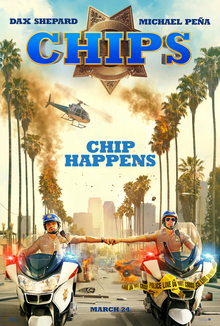

Date of Release : March 24, 2017
Cast :
- Dax Shepard as Officer Jon Baker
- Michael Pena as Officer Frank "Ponch" Poncherello, FBI agent working undercover at the CHP department.
- Vincent D'Onofrio as Ray Kurtz, bloodthirsty leader of a group of corrupt cops within the CHP department.
- Isiah Whitlock Jr. as Peterson, Ponch's Boss
- Adam Brody as Clay Allen, an officer
Description :
The driver in a robbery reveals himself to be an undercover FBI agent named Castillo, and he arrests the criminal who killed his partner. Meanwhile, at the training center for the California Highway Patrol, an older rookie motorcycle officer named Jon Baker is being allowed to graduate on a probationary basis. He is a former freestyle motocross racer beginning a new career after his body has been left damaged by his sport. He is on a regimen of pain killers and is living in the guest house, after he and his wife separated when he lost his sponsors. The FBI agent, now undercover as Frank (Ponch) Poncherello, is sent to the CHP after an armored car robbery, which makes it apparent that there are corrupt cops working in the department..